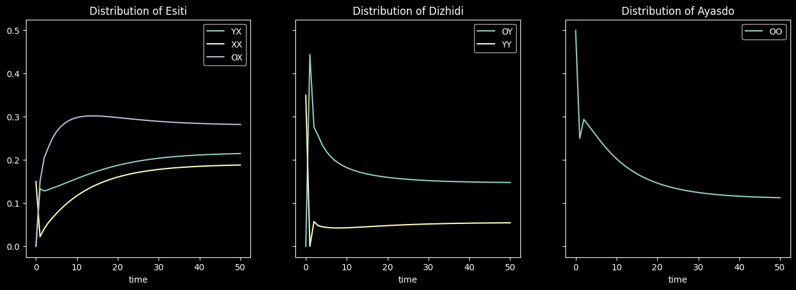
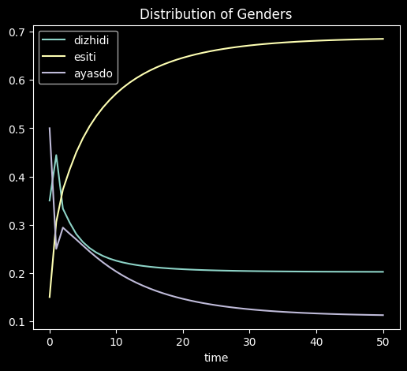

Main Simulation#
[1]:
%load_ext autoreload
%autoreload 2
[2]:
from pyAdasi.sim_utils import GenderSystem, Chromo, Gender, generate_gender_func, apg, dist_inverse, generate_distribution_func
import numpy as np
import pandas as pd
from matplotlib import pyplot as plt
[3]:
system = GenderSystem(False, Chromo.X, Chromo.Y, Chromo.O, extended=True)
determine_gender = generate_gender_func(system)
distribution_func = generate_distribution_func(system)
[4]:
a = 0.9
b = 0.2
[5]:
# a = 0.4
# b = 0.05
[6]:
input_prob = np.array([[0.5], [0], [0.35], [0], [0.15], [0]])
results = input_prob[:, 0].copy()
curr = input_prob.copy()
prev = curr.copy()
curr = distribution_func(prev)
results = np.vstack((results, np.hstack(curr.T[0])))
for i in range(2, 51):
aterm = distribution_func(curr)
bterm = distribution_func(prev)
cterm = dist_inverse(bterm)
next = a * aterm + (1 - a) * b * bterm + (1 - a) * (1 - b) * cterm
# next = a * aterm + (1 - a) * bterm
# next = aterm
prev = curr
curr = next
results = np.vstack((results, np.hstack(curr.T[0])))
[7]:
gene_dists = pd.DataFrame(results, columns = apg)
[8]:
gene_dists.tail(10)
[8]:
| OO | OY | YY | YX | XX | OX | |
|---|---|---|---|---|---|---|
| 41 | 0.115542 | 0.148907 | 0.053732 | 0.212003 | 0.185688 | 0.284128 |
| 42 | 0.115071 | 0.148744 | 0.053850 | 0.212428 | 0.186077 | 0.283829 |
| 43 | 0.114646 | 0.148590 | 0.053949 | 0.212826 | 0.186430 | 0.283549 |
| 44 | 0.114257 | 0.148455 | 0.054049 | 0.213188 | 0.186755 | 0.283287 |
| 45 | 0.113905 | 0.148328 | 0.054130 | 0.213531 | 0.187054 | 0.283052 |
| 46 | 0.113579 | 0.148211 | 0.054212 | 0.213830 | 0.187334 | 0.282835 |
| 47 | 0.113281 | 0.148102 | 0.054284 | 0.214110 | 0.187587 | 0.282636 |
| 48 | 0.113009 | 0.148003 | 0.054347 | 0.214373 | 0.187813 | 0.282455 |
| 49 | 0.112765 | 0.147912 | 0.054411 | 0.214608 | 0.188021 | 0.282283 |
| 50 | 0.112539 | 0.147831 | 0.054474 | 0.214825 | 0.188211 | 0.282129 |
[9]:
gene_dists['time'] = gene_dists.index
[10]:
gene_melt = gene_dists.melt(['time'], value_name = 'probability', var_name = 'genome')
gene_melt['gender'] = [determine_gender(x) for x in gene_melt['genome']]
[11]:
fig, (ax1, ax2, ax3) = plt.subplots(1, 3, sharey = True, figsize = (16, 5))
for gen in gene_melt['genome'].unique():
if determine_gender(gen) == Gender.E:
curax = ax1
elif determine_gender(gen) == Gender.D:
curax = ax2
else:
curax = ax3
curax.plot(gene_melt[gene_melt['genome']==gen]['time'], gene_melt[gene_melt['genome']==gen]['probability'], label=gen)
ax1.set_xlabel("time")
ax2.set_xlabel("time")
ax3.set_xlabel("time")
ax2.set_ylabel("")
ax3.set_ylabel("")
ax1.title.set_text("Distribution of Esiti")
ax2.title.set_text("Distribution of Dizhidi")
ax3.title.set_text("Distribution of Ayasdo")
ax1.legend()
ax2.legend()
ax3.legend()
plt.show()

[12]:
gender_dists = gene_dists.copy()
gender_dists[Gender.D] = [0] * len(gene_dists)
gender_dists[Gender.E] = [0] * len(gene_dists)
gender_dists[Gender.A] = [0] * len(gene_dists)
for g in apg:
gender_dists[determine_gender(g)] += gender_dists[g]
gender_dists = gender_dists.drop(apg, axis = 1)
[13]:
gender_melt = gender_dists.melt(['time'], value_name = 'probability', var_name = 'gender')
[14]:
fig, ax = plt.subplots(1, 1, figsize = (6, 5))
for race in gender_melt['gender'].unique():
ax.plot(gender_melt[gender_melt['gender']==race]['time'], gender_melt[gender_melt['gender']==race]['probability'], label=race)
ax.set_xlabel("time")
ax.title.set_text("Distribution of Genders")
ax.legend()
plt.show()

[15]:
gene_dists.iloc[list(range(0, 51, 5))]
[15]:
| OO | OY | YY | YX | XX | OX | time | |
|---|---|---|---|---|---|---|---|
| 0 | 0.500000 | 0.000000 | 0.350000 | 0.000000 | 0.150000 | 0.000000 | 0 |
| 5 | 0.256764 | 0.220064 | 0.043841 | 0.138152 | 0.076015 | 0.265164 | 5 |
| 10 | 0.202726 | 0.182321 | 0.042938 | 0.156790 | 0.117001 | 0.298225 | 10 |
| 15 | 0.167843 | 0.167511 | 0.045360 | 0.174032 | 0.143445 | 0.301819 | 15 |
| 20 | 0.146309 | 0.159723 | 0.047981 | 0.187514 | 0.160374 | 0.298106 | 20 |
| 25 | 0.132978 | 0.155066 | 0.050124 | 0.197245 | 0.171182 | 0.293415 | 25 |
| 30 | 0.124640 | 0.152144 | 0.051725 | 0.203973 | 0.178064 | 0.289445 | 30 |
| 35 | 0.119385 | 0.150281 | 0.052855 | 0.208521 | 0.182459 | 0.286506 | 35 |
| 40 | 0.116048 | 0.149097 | 0.053615 | 0.211533 | 0.185263 | 0.284453 | 40 |
| 45 | 0.113905 | 0.148328 | 0.054130 | 0.213531 | 0.187054 | 0.283052 | 45 |
| 50 | 0.112539 | 0.147831 | 0.054474 | 0.214825 | 0.188211 | 0.282129 | 50 |
[16]:
gender_dists.iloc[list(range(0, 51, 5))]
[16]:
| time | dizhidi | esiti | ayasdo | |
|---|---|---|---|---|
| 0 | 0 | 0.350000 | 0.150000 | 0.500000 |
| 5 | 5 | 0.263905 | 0.479331 | 0.256764 |
| 10 | 10 | 0.225258 | 0.572016 | 0.202726 |
| 15 | 15 | 0.212871 | 0.619295 | 0.167843 |
| 20 | 20 | 0.207705 | 0.645995 | 0.146309 |
| 25 | 25 | 0.205190 | 0.661841 | 0.132978 |
| 30 | 30 | 0.203869 | 0.671482 | 0.124640 |
| 35 | 35 | 0.203137 | 0.677487 | 0.119385 |
| 40 | 40 | 0.202712 | 0.681249 | 0.116048 |
| 45 | 45 | 0.202458 | 0.683637 | 0.113905 |
| 50 | 50 | 0.202305 | 0.685165 | 0.112539 |
[ ]: